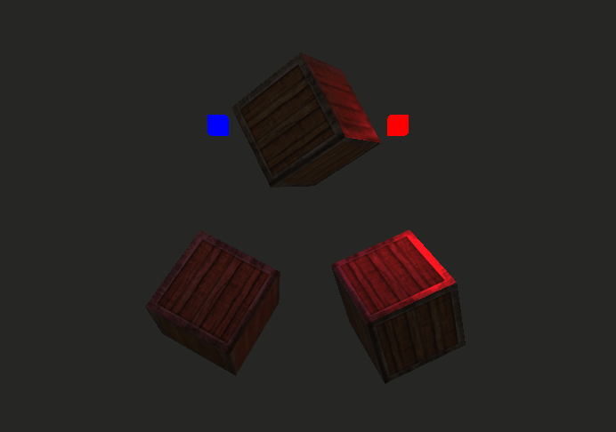
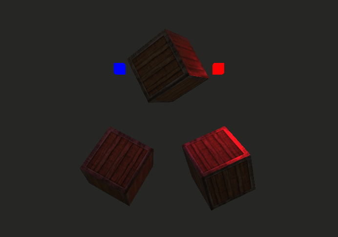

- Engine
- OpenGL
- C++
Role: Programmer
Team Size: Solo
Platform: PC
Time: 2 months
Nata Engine is a simple data-driven game engine built from the ground up in C++ and OpenGL. This project started as a collection of studies in OpenGL and eventually evolved into an engine. Considering the complexity of a project of this nature, I've been using it as a sandbox for features, algorithms or systems that then might end up making to the final build. The engine is far from being a fully fledged game engine but the current iteration allows to make simple games or to use for any other visualizations as expected. You'll read about these below.
For a more detailed view of this project's features, make sure to visit the github repo.
- Rendering Engine
- Collisions
- Data-Oriented Design
 buffer.h
buffer.h
 buffer.cpp
Rendering abstraction allows for quickly rendering objects without having to worry about all of OpenGL's boilerplate. The current abstraction structure is
heavily influenced by this.
buffer.cpp
Rendering abstraction allows for quickly rendering objects without having to worry about all of OpenGL's boilerplate. The current abstraction structure is
heavily influenced by this.
- Buffers and Attribute Layout: ...
- Shaders and Meshes: ...
 

Since we didn't have an animator on the team, we adapted by recurring to mostly procedural animation and using IK.
- Rendering Queue: ...
- Property Blocks: ...
The behaviour for this mechanic is mostly inspired by Little Nightmares' dragging system where the player needs to interact with an object to grab it and only then can drag it around. The object will be dropped if that same button is pressed or if it goes out of range.
Like many other ECS systems, this one is divided in three major parts: entities, components and systems (the latter being tightly coupled to both entities and components). All objects in the ECS inherit from NObject. All NObjects are described by their ID, initialization, game logic and decommision (Begin, Tick and OnDestroy). Small optimizations were made like iterating only through the enabled entities in the world which made Object Pooling much easier to implement. More optimizations could be made like only ticking entities that are in the field of view or proximity but these are yet to be implemented.
A simple object pooling system made possible by using the enable/disable system previously mentioned. Since only enabled entities are iterated through on tick, having many spawned disabled ones has little to no performance impact.
Inspired by Unity's DOTS and many other data-oriented approaches to game development, I wanted to experiment having my own for this engine too. The asteroids gif that is shown at the top of the page was made possible by using this system. Components are still not modular enough be seemingly with used this system but it's definitely in the engine's roadmap.
Simple collisions systems like Box vs Box, Sphere vs Sphere and Box vs Sphere are implemented. These systems are mostly used for first iterations or checks on the collisions where then other more advanced systems take place. The most used one of These right now is a system using SAT (Separated Axis Theorem) and AABBs. This system automatically imports a mesh's normals so it can be used even on more complex shapes.
The gif on the right showcases how most collisions are being handled in the engine. It works with an AABB bounding box, calculated by finding the mins and maxs on each axis. A first check is made for overlapping on each object's box and then a second iteration runs the SAT (Separated Axis Theorem) logic. Further optimizations for the collision algorithm include a spatial grid that is not yet implemented.
For this project, I made a very conscious effort to keep a consistent coding structure, overall design and conventions. For the file structure, I differentiated engine core files from game scripts by naming them lower-case or upper-case. For game files, they should include the prefix and the name of the class on its file name. This made it very easy to quickly search, find files and differentiate them without a very deep folder structure. Some prefixes like "N" also help understand if a class is from the engine or from a third-party library where names can be the same or very similar.
- App: Entry point from engine's main. Creates world, sets game mode and loads assets.
- World: Unique and global object on top of the ECS.
-
GameMode: Second in line after World. Multiple GameModes can be created but only one can be set at a time for the world. Initializes initial entities in world and can execute more level specific game logic.
Different GameModes should be created for each level. The following is an example of a GameModes' structure.
 GSpaceShooter.h
GSpaceShooter.cpp
GSpaceShooter.h
GSpaceShooter.cpp
-
Player: The player is an entity with its behaviour divided in each component. The following is an example of a player.
EPlayer.h
EPlayer.cpp
| Prefix: | Type: |
|---|---|
| N_ | Classes |
| F_ | Structs |
| G_ | GameMode |
| E_ | Entity |
| C_ | Component |
- Working on a bigger project like this forced me to constantly organize my code and structure in a way that was understandable in the present and also in the future. Like in most projects, I've had to refactor older systems and I felt comfortable doing it since I could easily read through the code and could get into it very quickly. This made the process of refactoring not seem like such a daunting task and it's something that I've constantly been doing with small optimizations on the engine's systems.
- Having such an extensive roadmap like I do now can get overwhelming and it's been affecting some of the engine's iterations. Right now, I'm simply going through it and choose which system would be more fun to experiment with and implement instead of thinking about priority. Although this has helped keeping my motivation high with this project and I've been working on it very consistently, it did negatively affect the engine's iterations as some systems could've been written better if higher priority and more fundamental tasks had been worked on first.